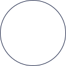
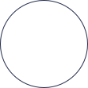
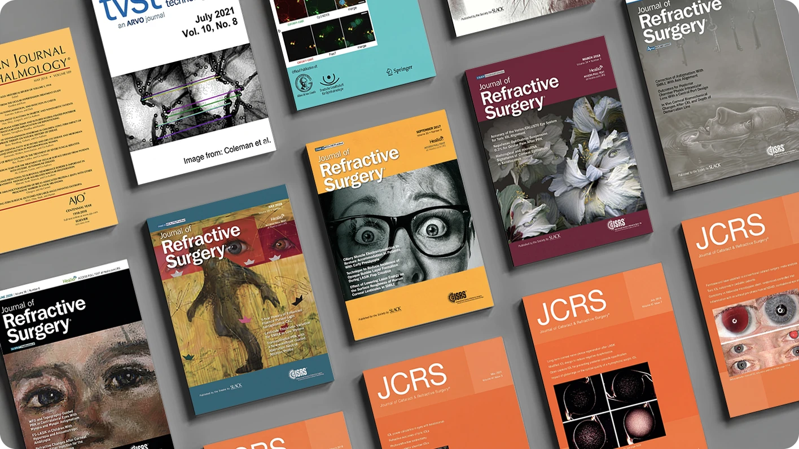
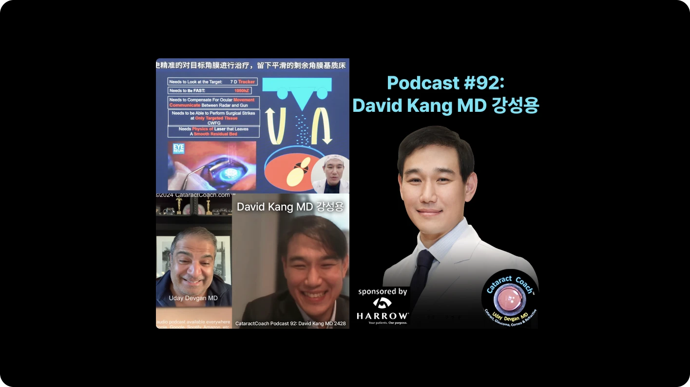
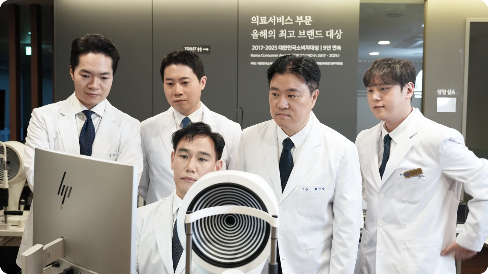
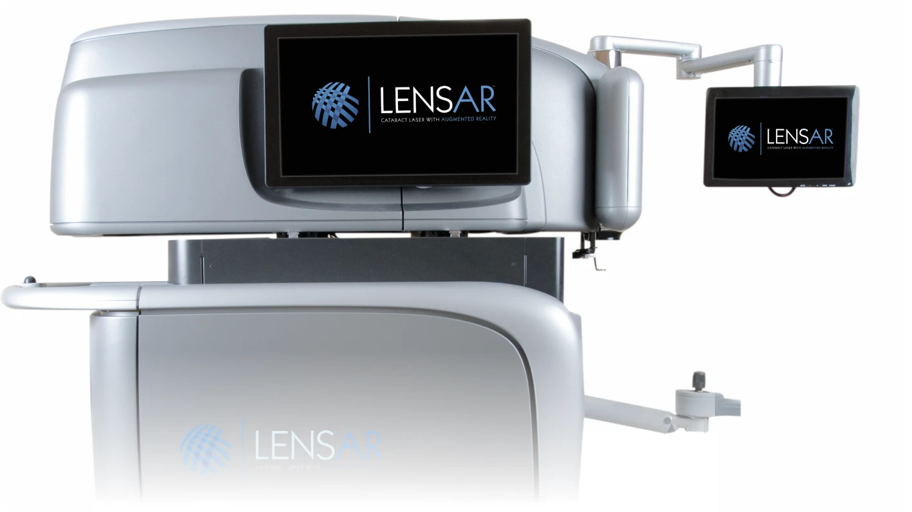
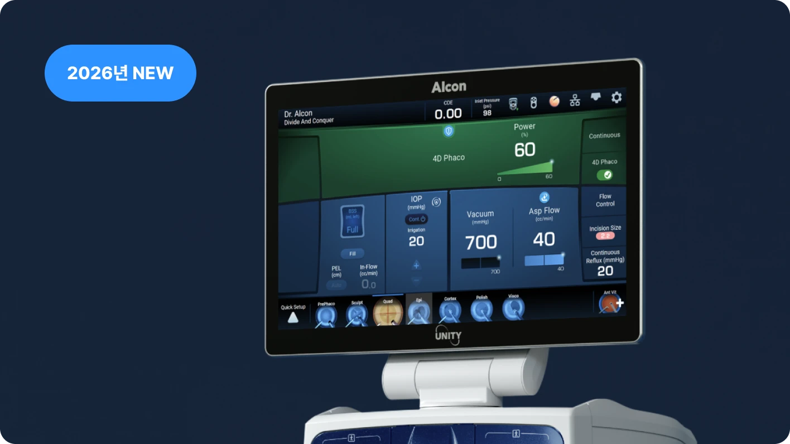
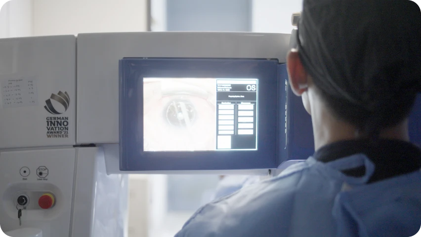
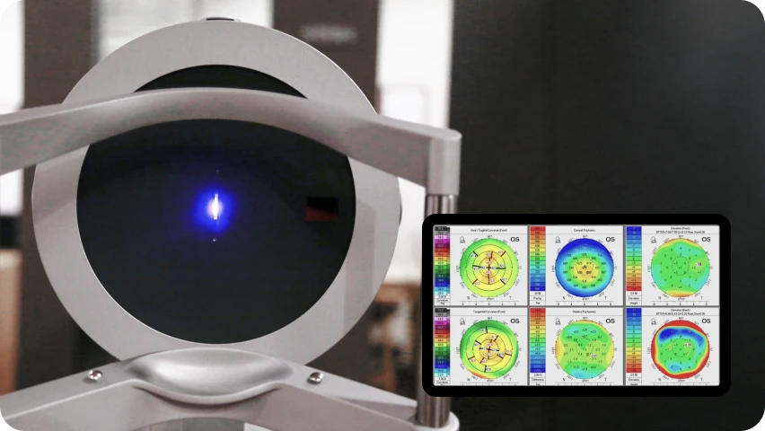
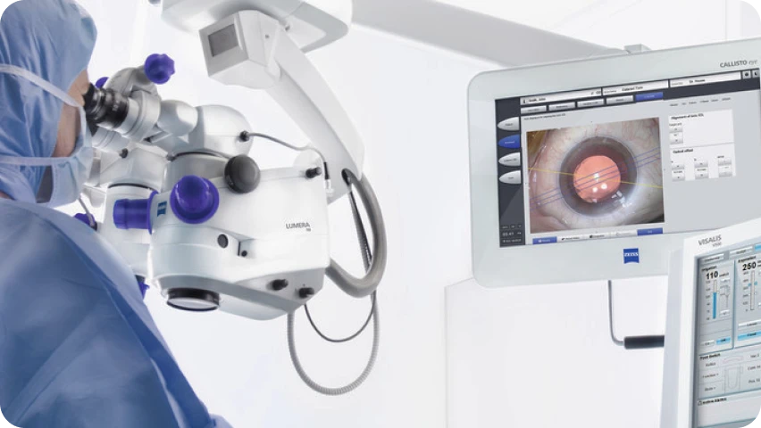

SCI 논문 65편, 안과 수술도구 특허 6건
수술 결과와 안과 수술 기술을 연구하고 발전시켜 온 아이리움의 의료 역량입니다.
아이리움안과는 LENSAR 레이저와 Alcon UNITY®CS 등 첨단 장비로 정밀한 수술과 수술 중 안정성을 지킵니다.
노안·백내장 > 백내장 수술


다양한 인공수정체별 백내장 수술 결과와 레이저 백내장 수술 경험을
학회에서 공유했습니다.

수술 결과와 안과 수술 기술을 연구하고 발전시켜 온 아이리움의 의료 역량입니다.

초창기 라식·라섹의 기술적 한계로 인한 중심 이탈, 좁은 광학부 수술로 인한 시야 불편은 각막을 먼저 치료 후 백내장 수술을 시행하여 시력 만족도를 높입니다.

전원 대학병원 출신 의료진이 직접 진료합니다.
수술 단계에 따라 필요한 장비를 적용해 수술의 정밀도를 높입니다.

3D 생체 데이터 분석을 통한 빠르고 정확한 펨토초 레이저수술

수술 중 실제 눈 상태에 가까운 생체 안압 유지, 누적 초음파 에너지
48% 감소
UNITY® 4D Phaco + Intelligent Fluidics


* 2X faster / 41% less energy / 48% less CDE는 알콘 공식 자료(실험실평가데이터) 기준 수치입니다.
논문으로 확인된 수술 중
눈 속 환경의 안정성
UNITY® CS는 백내장 수술 중 눈 안의 압력 변화와 수술 공간을 안정적으로 유지하도록 설계되었습니다. 관련 연구에서는 UNITY® CS가 기존 장비 대비 수술 중 눈 안의 공간과 압력이 안정적으로 유지되는 정도, 즉 전방 안정성에서 유리한 결과(약 2.8배)를 보인 것으로 보고되었습니다.
 J Cataract Refract Surg. 2026 Apr 1;52(4):393-397.
J Cataract Refract Surg. 2026 Apr 1;52(4):393-397.
LENSAR® 는 백내장 수술에서 각막 절개, 전낭 절개, 수정체 핵 분쇄 등의 과정을 레이저로
정교하게 보조하는 장비입니다. 환자의 눈 구조를 반영해 수술 계획을 세우는 데 활용되며,
수술의 정밀도를 높이는 데 도움을 줍니다.
일반 백내장 수술
칼을 사용하여 각막을 절개하고 초음파로 수정체를 파쇄하여 제거하는 수술법입니다.

수정체 전낭절개 | 일반 백내장 수술
백내장을 제거하기 위한 사전 절차인, 전낭절개 역시 일반 백내장 수술의 경우 의사가 손으로 직접 진행합니다.
레이저를 이용한 백내장 수술
각막을 절개부터 수정체 파쇄까지 레이저로 진행하는 수술법입니다.

수정체 전낭절개 | 레이저 이용수술
백내장 수술 시 레이저가 수정체 전낭을 정교하게 절개합니다.
믿음과 실력을 갖춘
의료진

빅데이터·AI 결합 검사,
1:1 맞춤형 수술

난시추적항법장치를 이용한
난시 교정

백내장 수술은 안전한가요?
수술 후 만족스러운 결과를
얻을 수 있나요?
수술 후 병원에서 어떤 관리를
해주나요?
수술실 관리는 어떻게 이루어 지고 있나요?
백내장 수술 전, 가장 많이 묻는 질문
수술은 언제 받아야 하나요?
레이저 백내장 수술은 일반 백내장 수술과 무엇이 다른가요?
로우에너지 백내장 수술은 무엇인가요?
수술 후 병원에서 어떤 관리를 해주나요?
과거 라식·라섹 경험이 있어도 백내장 수술 할수 있나요?
과거 라식·라섹을 했어도 백내장 수술이 가능한가요?